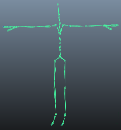

Preparing your own character
There are three main steps in creating an animated humanoid character from scratch: modeling, rigging and skinning.
Modeling
This is the process of creating your own humanoid Mesh in a 3D modeling package - Autodesk® 3ds Max®, Autodesk® Maya®, Blender, etc. Although this is a whole subject in its own right, there are a few guidelines you can follow to ensure a model works well with animation in a Unity project.
- Observe a sensible topology. The exact nature of a "sensible" structure for your mesh is rather subtle but generally, you should bear in mind how the vertices and triangles of the model will be distorted as it is animated. A poor topology will not allow the model to move without unsightly distortion of the mesh. A lot can be learned by studying existing 3D character meshes to see how the topology is arranged and why.
- Be mindful of the scale of your mesh. Do a test import and compare the size of your imported model with a "meter cube" (the standard Unity cube primitive has a side length of one unit, so it can be taken as a 1m cube for most purposes). Check the units your 3D package is using and adjust the export settings so that the size of the model is in correct proportion to the cube. Unless you are careful, it is easy to create models without any notion of their scale and consequently end up with a set of objects that are disproportionate in size when they are imported into Unity.
- Arrange the mesh so that the character's feet are standing on the local origin or "anchor point" of the model. Since a character typically walks upright on a floor, it is much easier to handle if its anchor point (ie, its transform position) is directly on that floor.
- Model in a T-pose if you can. This will help allow space to refine polygon detail where you need it (e.g. underarms). This will also make it easier to position your rig inside the mesh.
- Clean up your model. Where possible, cap holes, weld verts and remove hidden faces, this will help with skinning, especially automated skinning processes.

Rigging
This is the process of creating a skeleton of joints to control the movements of your model.
3D packages provide a number of ways to create joints for your humanoid rig. These range from ready-made biped skeletons that you can scale to fit your mesh, right through to tools for individual bone creation and parenting to create your own bone structure. To work with Mecanim, the hips should be the root element of the bone hierarchy. A minimum of fifteen bones are required in the skeleton.
The joint/bone hierachy should follow a natural structure for the character you are creating. Given that arms and legs come in pairs, you should use a consistent convention for naming them (eg, "arm_L" for the left arm, "arm_R" for the right arm, etc). Possible structures for the hierarchy might be:-
* HIPS - spine - chest - shoulders - arm - forearm - hand
* HIPS - spine - chest - neck - head
* HIPS - UpLeg - Leg - foot - toe - toe_end

Skinning
This is the process of attaching the mesh to the skeleton.
Skinning involves binding vertices in your mesh to bones, either directly (rigid bind) or with blended influence to a number of bones (soft bind). Different software packages use different methods, eg, assigning individual vertices and painting the weighting of influence per bone onto the mesh. The initial setup is typically automated, say by finding the nearest influence or using "heatmaps". Skinning usually requires a fair amount of work and testing with animations in order to ensure satisfactory results for the skin deformation. Some general guidelines for this process include:
- Using an automated process initially to set up some of the skinning (see relevant tutorials on Autodesk® 3ds Max®, Autodesk® Maya®, etc).
- Creating a simple animation for your rig or importing some animation data to act as a test for the skinning. This should give you a quick way to evaluate whether or not the skinning looks good in motion.
- Incrementally editing and refining your skinning solution.
- Sticking to a maximum of four influences when using a soft bind, since this is the maximum number that Unity will handle. If more than four influences affect part of the mesh then at least some information will be lost when playing the animation in Unity.